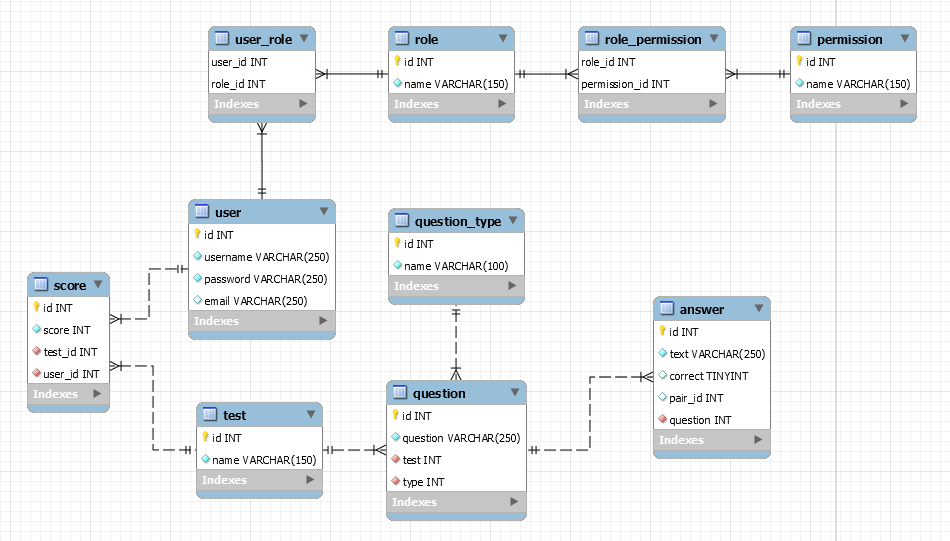

A rendszer célja, hogy a felhasználók egy egyszerű és játékos környezetben tudjanak tanulni. Célunk, hogy egy olyan programot létrehozzunk,
amelyben a felhasználok, különböző szerepkörökben tudnak a rendszerrel interaktiválni.
Fontos, hogy a rendszer használhatósága egyszerű legyen. Minden felhasználónak érthető legyen, hogy mit és hogyan lehet a rendszerben
csinálni.
A felhasználók különböző szerepközökben, különböző dolgokat látnak és csinálhatnak. A szerepköröknek más-más céljuk és rendszeren belüli
dolgokkal interaktiválhatnak.
Minden szerepkörben elérhető lesz, egy Órarend, egy Elektronikus napló, és egy Üzenet felület, de mindegyikhez a különböző szerepkörök máshogy
viszonyulnak.
A Diákoknak és Tanároknak elérhető lesz egy Kvíz és Teszt felület, a Tanár itt tud létrehozni feladatokat a Diákoknak,
a Diák időre töltheti ki a feladatokat,
amelyekre pontokat kap helyes válasz esetén, és a végén egy Toplistában láthatja eredményét.
A programunk azért készül, hogy segítse a tanulást az iskolákban, a Diákoknak és a Tanároknok számára egyaránt.
A felhasználók szívesebben
dolgoznak egy számítógépes felületen, ahol mindent láthatnak (Elektronikus napló, Órarend, Üzenetek, stb.),
és mindent elérhetnek
könnyen és gyorsan. A felhasználók könnyen tudják tartani a kapcsolatot egymás között, és akármilyen hibát azonnal tudnak jelezni.
A programunk megvalósításához különböző eszközöket kell használnunk. Szükséges a Trello, hogy nyomon tudjuk követni, ki mit végez.
Kell a GitHub, hogy az összes fájlunkat, egyhelyen és gyorsan elérhessük, és megkönnyitjük vele a dokumentumok és a programunk
készítését több felhasználó esetén.
Szükséges egy Adatbázis-rendszer kezelő program, amelyben eltudunk készíteni egy adatbázist és annak a tervét.
Kell egy program amiben a programunkat készítjük, erre egy Androidos alkalmazás elkészítésére alkalmas programot választunk.
Valamilyen rendszer- vagy képernyőtervező program / alkalmazás szükséges, hogy képeket képernyőterveket készíthessünk.
A rendszert egy előző féléves hasonló rendszerből (mondhatni prototípusból) és a saját tudásunkból készítjük.
Biztosan mindenki aki a
projekten dolgozik merít valamilyen inspirációt valahonnan, legyen az egy másik hasonló rendszer,
egy teljesen más dologra használható program aminek az alapjai hasonlók, stb.
Minden dokumentumot, tervet, programot, képet és egyebet mi készítünk, ezeket az elöbb felsorolt eszközök segítségével tudjuk megvalósítani.
A rendszer célja, hogy a felhasználó játékos körülmények között tud tanulni, különböző feladatokat megoldani. A felhasználó pontszámokat kap arról, hogyan sikerült megoldania a feladatokat. Fontos, hogy a felhasználó könnyen el tudjon igazodni a felületeken ezért minimalista felhasználói felületet kap a program. A tanár szerepkörrel rendelkező felhasználók feltölthetnek feladatsorokat az adatbázisba. A rendszer használható Androidos eszközökön, alkalmazás formájában, valamint webes felületen is elérhető. A rendszer az adatokat egy Web Service segítségével kapja az adatbázisból. Mivel az alkalmazást csak webes felületen, és Android alkalmazásban szeretnénk elérhetővé tenni, nem célunk hogy más, például IOS operációs rendszerrel rendelkező eszközön fusson. A felhasználó a feladatsorok megoldása után pontszámokat kap. Teljesítményét a toplistán is megtekintheti.
Feladatuk az adatok tárolásához szükséges adatszerkezetek kialakítása, funkciók létrehozása, a különböző platformok kiszolgálása adatokkal.
Felhasználóbarát webes megjelenésért felelnek, amin keresztül hozzáférhetnek a felhasználók a szoftver funkcióihoz.
Az alkalmazás androidos mobiltelefonon történő megvalósításáért felelnek, ami tartalmazza a felhasználóbarát felületet és a szerverrel való kommunikációt.
| Funkció / Story | Feladat / Task | Prioritás | Becslés | Aktuális becslés | Eltelt idő | Hátralévő idő |
|---|---|---|---|---|---|---|
| Követelmény specifikáció | 0 | 12 | 12 | 12 | 0 | |
| Funkcionális specifikáció | 0 | 12 | 12 | 12 | 0 | |
| Rendszerterv | 0 | 16 | 16 | 8 | 8 | |
| Adattárolás | Adatmodell megtervezése | 0 | 4 | 4 | 4 | 0 |
| Adatbázis megvalósítása a szerveren | 1 | 1 | 1 | 0 | 1 | |
| Login felület | Logó elkészítése | 2 | 8 | 8 | 0 | 8 |
| Autentikációs beviteli mezők megvalósítása | 1 | 4 | 4 | 0 | 4 | |
| Autentikációs adatok küldése a szervernek | 1 | 4 | 4 | 0 | 4 | |
| Regisztrációs felületre átirányító gomb létrehozása | 1 | 1 | 1 | 0 | 1 | |
| Regisztrációs felület | Beviteli mezők megvalósítása | 1 | 4 | 4 | 0 | 4 |
| Regisztrációs adatok küldése a szervernek | 1 | 4 | 4 | 0 | 4 | |
| Bejelentkezési felületre visszairányító gomb létrehozása | 1 | 1 | 1 | 0 | 1 | |
| Menü megvalósítása | 1 | 8 | 8 | 0 | 8 | |
| Kvíz felület | Szűrés egy adott kvízre | 1 | 4 | 4 | 0 | 4 |
| Kérdések lekérdezése és megjelenítése | 1 | 1 | 1 | 0 | 1 | |
| Válaszlehetőségek lekérdezése és megjelenítése | 1 | 1 | 1 | 0 | 1 | |
| Pontszámítás megvalósítása | 1 | 4 | 4 | 0 | 4 | |
| Időkorlát kivitelezése | 2 | 2 | 2 | 0 | 2 | |
| Eredménytábla megalkotása | 2 | 1 | 1 | 0 | 1 | |
| Toplista létrehozása | 2 | 1 | 1 | 0 | 1 | |
| Tesztelés | 1 | 40 | 40 | 0 | 40 | |
| Tartalék idő | 3 | 16 | 16 | 0 | 16 | |
| Órák: | 149 | 149 | 36 | 113 | ||
| Embernap | 18,63 | 18,63 | 4,5 | 14,13 |
| Fogalom | Magyarázat |
|---|---|
| Backend | A kiszolgáló, ahonnan az alkalmazást el lehet érni. |
| Frontend | Egy réteg ami feladata a rendszerből kijutó adatok prezentálása, illetve a bejövő adatok fogadása. |
| Web-service | Különböző programnyelveken írt és különböző platformokon futó szoftveralkalmazások interneten keresztül történő adatcseréjére használt vebszolgáltatások. |
| Multiplatform | Több környezetben futtatható alkalmazás. |
| Main menu | A fő menü, amely a weboldal/program indulásakor megjelenik. |
| Toplista | A játék végén megjelenő panel, amely a statisztikát mutatja. |
| Bug | Fejlesztési hiba ami által a program nem a várt eredményt hozza. |
| Gameboard | Játék közben, a különböző elemeket tartalmazó felület. |
| Tananyag | Az alkalmazásba feltöltött oktatásra szánt ismeretkör összessége amit a tanár ad meg. |
| kvíz | Egy kitöltendő feladatsor amit a tanár tesz fel és a diákoknak kell kitölteni, a diákok pontszámokat kapnak és láthatnak egy toplistát. |
| Teszt | Egy kitöltendő feladatsor, a kvízzel hasonló, de érdemjegyet is kapnak a diákok a kitöltésükért. |
Backend:
A rendszerhez szükség van egy adatbázis szerverre, ebben az esetben MySql-t használunk.
A kliens oldali programokat egy php alapú REST api szolgálja ki, ez csatlakozik az adatbázis szerverhez.
A kliensekkel JSON objektumokkal kommunikál.
Web Kliens:
A web alkalmazás Angular JS keretrendszer használatával készül el.A rest api-hoz a user belépését követően egyedi api-key segítségével lehet hozzáférni, ez biztosítja, hogy illetéktelen felhasználók ne módosíthassák az adatokat.
Változások kezelése:
A php backend-ben konfigurációs állományokat kell létrehozni, azokban tároljuk el például az adatbázis szerver címét és a szükséges belépési adatokat. A konfigurációs fájlok átírásával könnyedén alkalmazkodhatunk egy esetleges változáshoz.
A web alkalmazás esetén a szerver címét, szükséges adatokat szintén konfigurációs állományba helyezzük, vagy Angular esetén például az environments/environment.prod.ts fájlba.
Rendszer bővíthetősége:
A REST api esetén a felépítéséből adódóan egyszerűen lehet bővíteni a rendszert. Szükség esetén hozzá kell adni egy/több új endpoint-ot.
Az Angular keretrendszer modulokból és komponensekből áll, ez lehetővé teszi a hatékony bővíthetőséget és újrahasználhatóságot.
Biztonsági funkciók:
A REST api-nak van egy user beléptető végpontja. Sikeres belépés után egy egyedi api kulcsot kap a kliens program. A további kérésekhez el kell küldenie ezt a kulcsot a szervernek. Ezzel biztosítjuk, hogy csak hitelesített felhasználók férhessenek az adatokhoz.

Backend részen a kiszolgáló egy php-ban készült REST szolgáltatás lesz.
Ez csatlakozik egy php myadminos szerver oldali adatbázishoz, ahonnan eljárások segítségével képes lesz adatokat lekérni, és felvinni,
valamint képes továbbküldeni, és fogadni a kliens/kliensek által szolgáltatott adatokat.
Metódusai:
A Webes felület főként HTML, CSS, és Javascript nyelven fog készülni.
Ezeket a technológiákat amennyire csak lehet külön fájlokba írva készítjük, és úgy fogjuk egymáshoz csatolni a jobb átláthatóság,
könnyebb változtathatóság, és könnyebb bővítés érdekében. Képes lesz felhasználni a Backend részen futó REST szolgáltatás metódusait,
ezáltal tud felvinni és lekérdezni adatokat az adatbázisból. Az eltelt időt a kliens fogja számolni a feladatoknál, hogy ne legyenek eltérések.
ahogy az androidos csapat gondolja...
A tesztelések célja a rendszer és komponensei funkcionalitásának teljes vizsgálata, ellenőrzése, a rendszer által megvalósított üzleti szolgáltatások verifikálása.
Unit teszt:
Ahol csak lehetséges, szükséges már a fejlesztési idő alatt is tesztelni, hogy a metódusok megfelelően működnek-e.
Ezért a metódusok megfelelő működésének biztosítására mindegyikhez írni kell Unit teszteket, a minnél nagyobb kódlefedettséget szem előtt tartva.
A metódusok akkor vannak kész, ha a tesztesetek hiba nélkül lefutnak az egyes metódusokon.
Alfa teszt:
A teszt elsődleges célja: az eddig meglévő funkcióknak a különböző böngészőkkel, és androidokkal való kompatibilitásának tesztelése.
A tesztet a fejlesztők végzik.
Az eljárás sikeres, ha különböző böngészőkben és különböző androidokon is megfelelően működnek a különböző funkciók.
A teszt időtartama egy hét.
Beta teszt:
Ezt a tesztet nem a fejlesztők végzik.
Backend Service
A login/regisztrációs felület elrendezésének ellenőrzése: Elvárt működés: a funkcionális specifikációban szereplő képernyőtervnek megfelelően kell kinéznie, a képernyő méretétől függetlenül.
Elvárt működés: Megfelelő felhasználónév és jelszó megadása esetén a bejelentkezés gomb lenyomásakor bejelentkezik.
Amennyiben a felhasználónév, vagy a jelszó hibás/nincs megadva, egy figyelmeztető üzenetet dob a felhasználó számára, melyben tályékoztatja a hibáról.
A játék felület elrendezésének ellenőrzése: Elvárt működés: a funkcionális specifikációban szereplő képernyőtervnek megfelelően kell kinéznie, a képernyő méretétől függetlenül. Az időmérő 30-tól számol visszafelé. Ezzel együtt a progressbar értéke is csökken. Amennyiben a játékos jól válaszol, rosszul válaszol vagy lejár az idő, a felület betölti a következő kérdést. Az utolsó kérdés után pedig az eredménytáblát.
Elvárt működés: Ha a megfelelő választ választotta ki akkor az eltelt idő fügvényében kap pontokat.
Elvárt működés: A játék végén a felület betölt egy táblát, ami a játékosok elért pontszámát mutatja. Az eredménytábla az első három helyezettet és annak pontszámát jeleníti meg, illetve az adott játékos helyezését színekkel hangsúlyozva.
Elvárt működés: A felhasználók maximális pontszámai alapján megjeleníti a felhasználók neveit és pontjait csökkenő sorrendben.
A login felület elrendezésének ellenőrzése: Elvárt működés: a funkcionális specifikációban szereplő képernyőtervnek megfelelően kell kinéznie, a képernyő méretétől függetlenül.
Elvárt működés: Megfelelő felhasználónév és jelszó megadása esetén a Bejelentkezés gomb lenyomásakor bejelentkezik.
Amennyiben a felhasználónév, vagy a jelszó hibás/nincs megadva, egy figyelmeztető üzenetet dob a felhasználó számára, melyben tályékoztatja a hibáról.
Elvárt működés: a funkcionális specifikációban szereplő képernyőtervnek megfelelően kell kinéznie, a képernyő méretétől függetlenül. Az időmérő 30-tól számol visszafelé. Ezzel együtt a progressbar értéke is csökken. Amennyiben a játékos jól válaszol, rosszul válaszol vagy lejár az idő, a felület betölti a következő kérdést. Az utolsó kérdés után pedig az eredménytáblát.
Elvárt működés: Ha a megfelelő választ választotta ki akkor az eltelt idő fügvényében kap pontokat.
Elvárt működés: A játék végén a felület betölt egy táblát, ami a játékosok elért pontszámát mutatja. Az eredménytábla az első három helyezettet és annak pontszámát jeleníti meg, illetve az adott játékos helyezését színekkel hangsúlyozva.
Elvárt működés: A felhasználók maximális pontszámai alapján megjeleníti a felhasználók neveit és pontjait csökkenő sorrendben.
Androidos alkalmazás
Töltse le az alkalmazást a Google áruházból, adja meg a szükséges engedélyeket és telepítse a programot!
Amennyiben nem az áruházból kívánja telepíteni az alkalmazást, úgy engedélyezze készülékén az úgynevezett "Harmadik féltől származó tartalmakat" a beállításoknál!
Helyezze az ".apk" kiterjesztésú elemet a készülékére, majd futtassa azt!
Webes alkalmazás
A szoftver webes felületéhez csak egy ajánlott böngésző telepítése szükséges (Google Chrome, Firefox, Opera, Safari), külön szoftver nem kell hozzá. A webszerverre közvetlenül az internetről kapcsolódnak rá a kliensek.
Az alkalmazás folyamatos üzemeltetése és karbantartása, mely magában foglalja a programhibák elhárítását, a belső igények változása miatti módosításokat, valamint a környezeti feltételek változása miatt megfogalmazott program-, illetve állománymódosítási igényeket. Ellenőrizni kell, hogy a jövőben kiadott Android verziókkal kompatibilis-e az alkalmazás. Idő elteltével új kategóriákat kell hozzáadni a játékhoz, hogy fent tartsuk az érdeklődési szintet.
Karbantartás